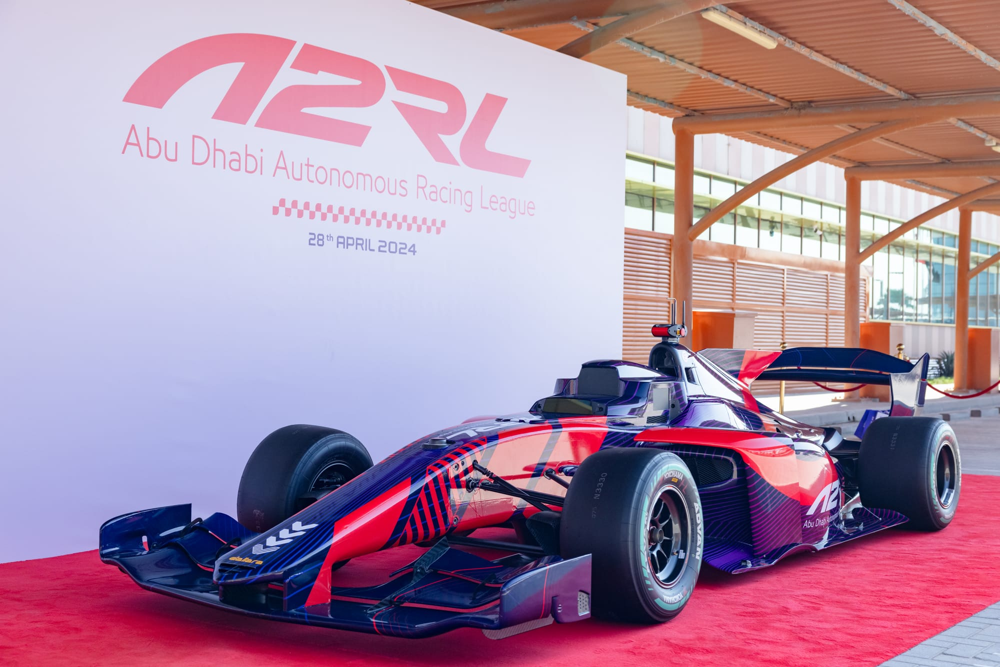
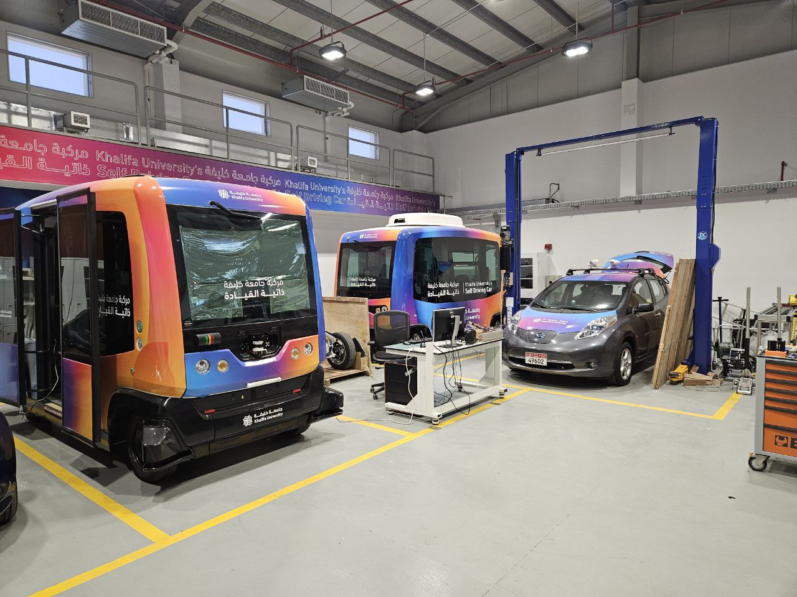
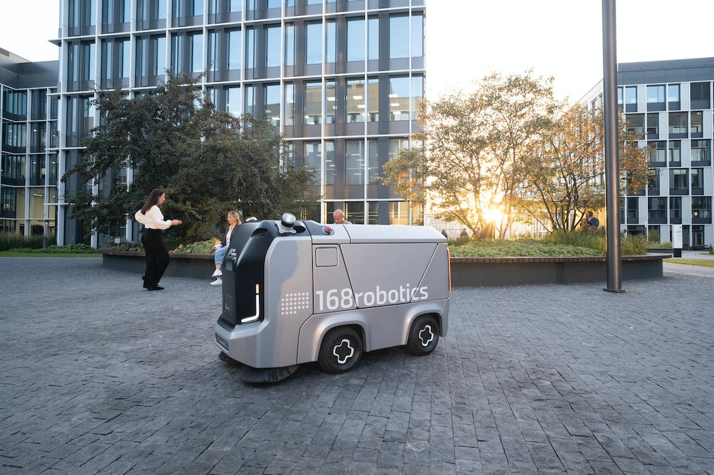
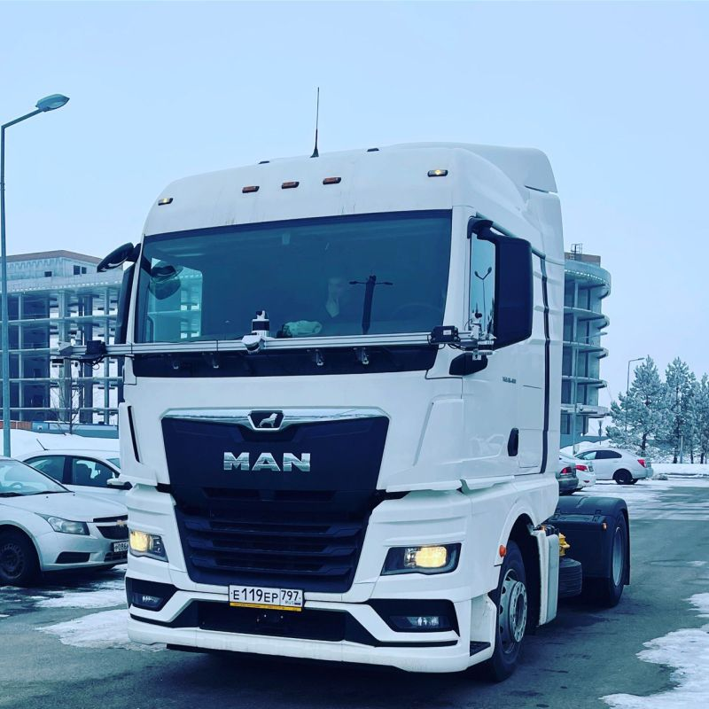
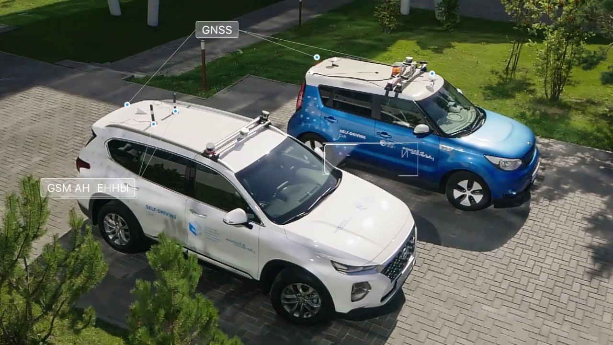
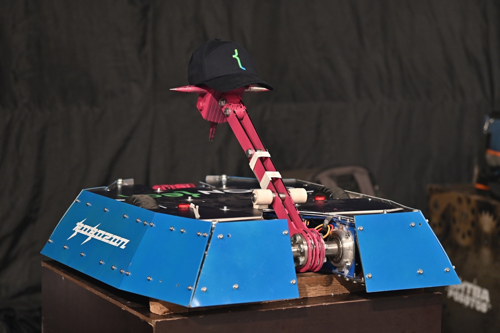

About
I am a Lead Robotics / Perception Engineer with 5+ years building production 3D detection, sensor-fusion, and control stacks for autonomous trucks, autonomous racing platforms, and mobile robots. My target roles are Lead AV Perception, Robotics Perception, and Embodied AI.
My experience combines research, industrial software development, and technical leadership. At Khalifa University / Team FlyEagle, I lead a 10-engineer perception-planning-control team building an A2RL race car autonomy stack for 250+ km/h operation. At Ozon Tech, I shipped control software for MAN TGM and Volvo FH autonomous freight trucks.
I am especially interested in robust 3D perception, self-supervised feature learning, uncertainty-aware trajectory planning, diffusion-based opponent forecasting, deep reinforcement learning, and scalable autonomy systems for real-world deployment.
Featured Projects

A2RL / Team FlyEagle — Autonomous Racing Perception
Lead a 10-engineer team building the full autonomy stack for an A2RL race car operating at 250+ km/h, with ownership across architecture, roadmap, sprint decomposition, code review, and CI/CD.
Result: Secured 2nd place in A2RL Silver League 2025 against 12 international university teams by shipping a 30 FPS camera+LiDAR 3D-detection pipeline with <40 ms end-to-end latency on an RTX A6000.
Technologies: Computer Vision, 3D Object Detection, Sensor Fusion, PyTorch, ROS, Autonomous Driving.

Khalifa University — Self-Driving Cars Laboratory
Conducted research in autonomous driving perception within Khalifa University’s Self-Driving Cars Laboratory, focusing on cross-domain 3D perception, evaluation harnesses, and applied autonomy research.
Focus: Self-driving cars, perception, 3D detection, autonomous mobility.

168ROBOTICS — Multi-modal 3D Object Detection
Designed and shipped a LiDAR 3D-detection baseline from scratch for autonomous platforms, including the data pipeline, model architecture, and evaluation protocol on a 15k-frame internal dataset.
Result: Reached NDS 80 and reduced inference latency 1.5× via TensorRT INT8 quantization and CUDA-kernel tuning, enabling 90 FPS deployment on Jetson Orin.
Technologies: Deep Learning, Vision Transformers, Multi-modal Perception, Sensor Fusion, 3D Object Detection.

Ozon Tech — Autonomous Truck Control System
Owned the C++17 lateral and longitudinal control module for MAN TGM and Volvo FH autonomous freight trucks, running on an STM32-based ECU at approximately 100 Hz.
Impact: Achieved approximately 30 cm lateral tracking error at 80 km/h on M-7 public-road trials and shipped the controller to revenue trucks logging 100+ km of autonomous miles on the M-7 corridor.
Technologies: C/C++, Control Systems, MPC, ROS, Autonomous Trucks, Robotics Software.

Innopolis University — Self-Driving Cars
Worked on self-driving car development in a university robotics laboratory, including control modules, network interfaces, low-level software, and system integration.
Focus: Autonomous vehicles, control systems, embedded software, low-level integration.

Battle of Robots — RobOZON Team
Participated in the Battle of Robots competition with team RobOZON, contributing to the development and preparation of a competitive robotic platform.
Focus: Robotics engineering, mechanical integration, testing, competition-driven development.
Research & Publications
Publication Themes
Full list: 7 papers, 3 first-author, and 75+ citations on Google Scholar. My research connects real-time 3D perception, sensor fusion, vision-language models, diffusion-based planning, and end-to-end autonomous driving. The work is especially focused on making perception and decision-making systems robust enough for autonomous vehicles, racing platforms, and mobile robots operating under limited labeled data.
My PhD topic is Uncertainty-Aware Trajectory Planning in Autonomous Racing via Diffusion-Based Opponent Forecasting and Deep Reinforcement Learning, combining predictive modeling, risk-aware planning, and learning-based control for high-speed autonomous racing scenarios.
-
PerspectiveFusion: A Lightweight Real-time 3D Detector for Autonomous Driving
Lightweight real-time 3D detector for practical autonomous driving deployment, balancing accuracy and runtime constraints for production-oriented perception stacks.
-
EagleVision: A Multi-Task Benchmark for Cross-Domain Perception in High-Speed Autonomous Racing
Multi-task benchmark for high-speed autonomous racing with 14,893 Indy Autonomous Challenge frames, 1,163 A2RL Real frames, and 12,000 simulator-generated annotations. arXiv
-
METDrive: Multi-modal End-to-end Autonomous Driving with Temporal Guidance
End-to-end autonomous driving method that uses multi-modal inputs and temporal guidance to improve driving decisions across complex road scenes. arXiv
-
FADet: A Multi-sensor 3D Object Detection Network based on Local Featured Attention
Multi-sensor 3D detection architecture for autonomous driving, using local feature attention to strengthen fusion between perception modalities. arXiv
-
VDT-Auto: End-to-end Autonomous Driving with VLM-Guided Diffusion Transformers
End-to-end autonomous driving approach combining vision-language guidance with diffusion transformers for interpretable scene understanding and trajectory generation. arXiv
-
VLM-Auto: VLM-based Autonomous Driving Assistant with Human-like Behavior and Understanding for Complex Road Scenes
Vision-language driving assistant for complex road scenes, focused on human-like reasoning and explainable autonomous driving support. IEEE Xplore · arXiv · Citations: 57+
-
Collaborative Trajectory Prediction via Late Fusion
Model-agnostic late-fusion framework for collaborative V2V trajectory forecasting that reduces miss rate and improves trajectory success rate across OPV2V, V2V4Real, and DeepAccident. arXiv
Education
Skoltech
Research topic: Uncertainty-Aware Trajectory Planning in Autonomous Racing via Diffusion-Based Opponent Forecasting and Deep Reinforcement Learning.
Focus: autonomous racing, trajectory planning, opponent forecasting, uncertainty estimation, diffusion models, and deep reinforcement learning.
Skoltech
GPA: 5.0/5.0
Focus: Autonomous Driving, Multi-modal Perception, Deep Learning. Research: 3D Object Detection using Vision Transformers and Sensor Fusion.
MSc thesis topic: Multi-modal 3D Object Detection for autonomous mobile robotics.
Innopolis University
GPA: 4.6/5.0
Thesis: Controller design for autonomous vehicles using MPC, CLF/CBF, and optimization-based control.
Founder Experience
StraightenUp — AI-powered wearable for posture monitoring, Skolkovo resident, semifinalist at Sevan Startup Summit 2025 · Chain of Blocks — TON smart-contract mobile app, acquired in 2025 · TECHFRENS — small software team delivering blockchain projects.
Skills
Contact
I am currently open to Lead AV Perception, Robotics Perception, and Embodied AI roles.
Email: zakhar.iagudin@gmail.com
LinkedIn: linkedin.com/in/zakhar-yagudin
GitHub: github.com/zakhar02
Google Scholar: Zakhar Yagudin publications
CV: Download PDF